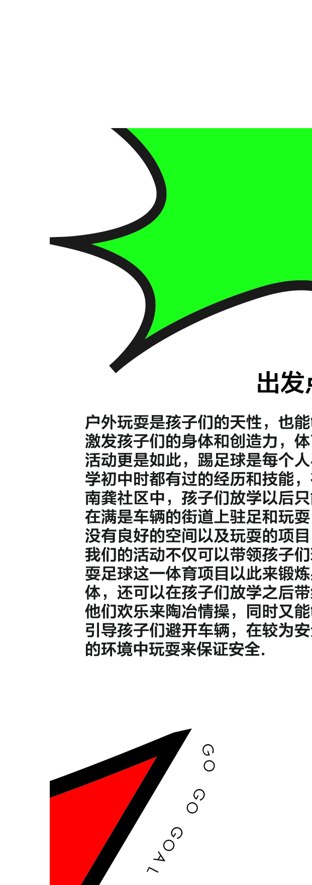
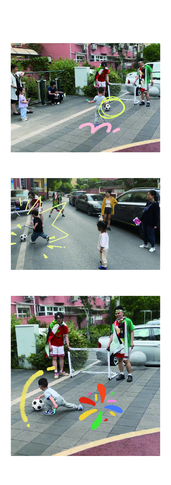
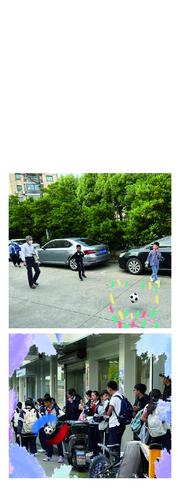

陈龙 Wx/Tel 18121115698
Chen Portfolio (草莽 Wildness) (可持续性 Sustainability) (街头 Street)


本项目是一个基于上海市虹桥南龚社区的社区营造活动设计，户外的活动激发孩子们的身体机能创造力，热血的足球挥洒青春的激情和汗水，随机变化的活动空间适应南龚社区的环境，适当的引导使孩子们的安全能够得到保障，人与人的碰撞充斥着南龚的街道，南龚球王，等你来战！